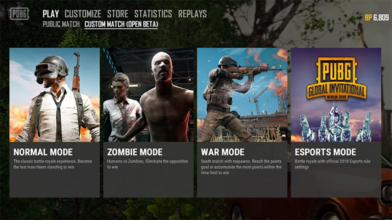
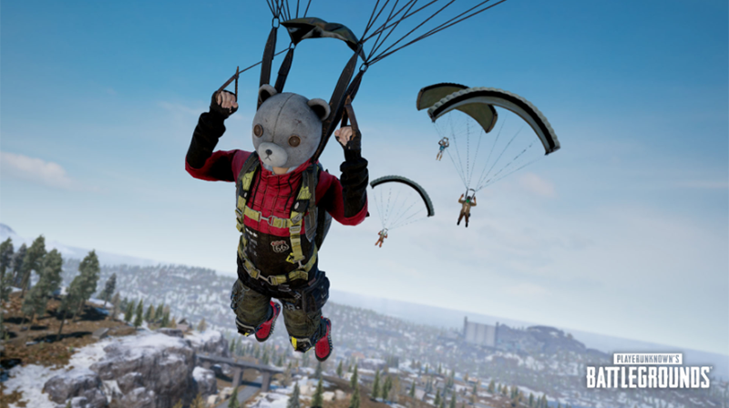
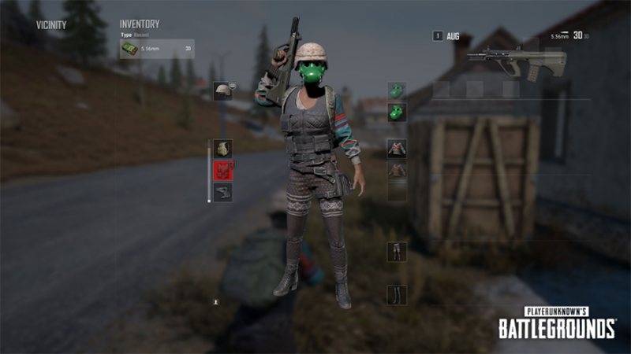
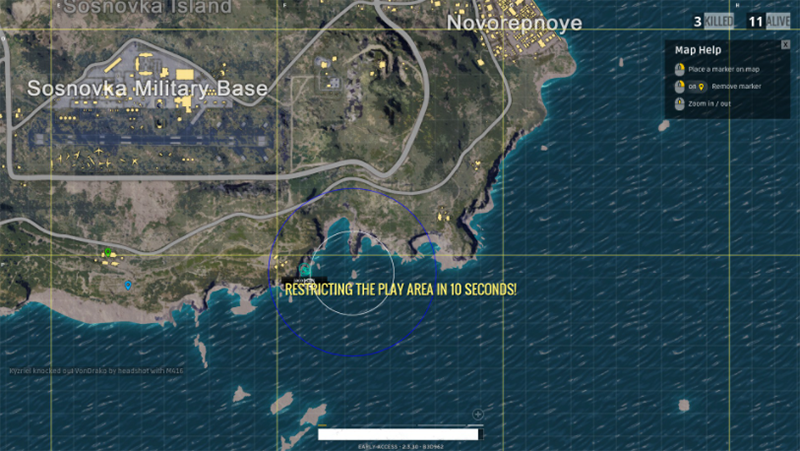
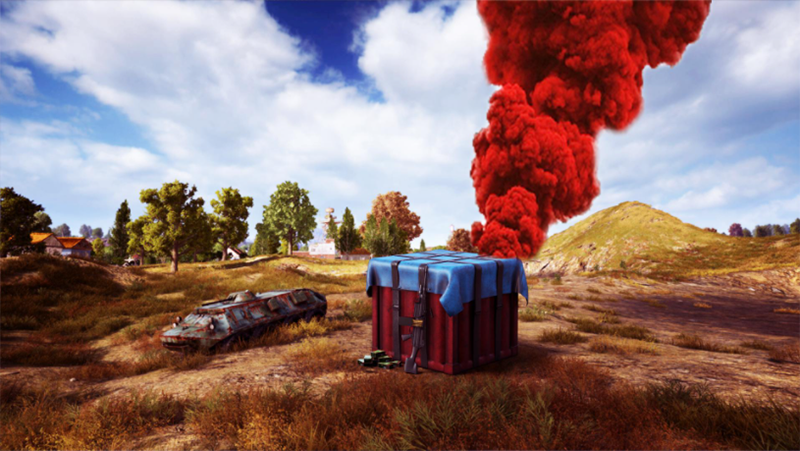
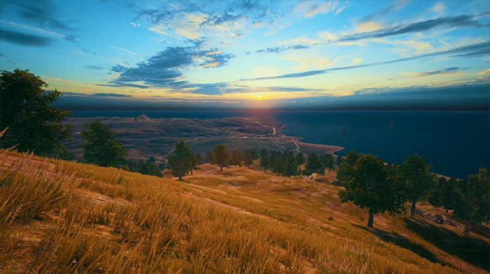
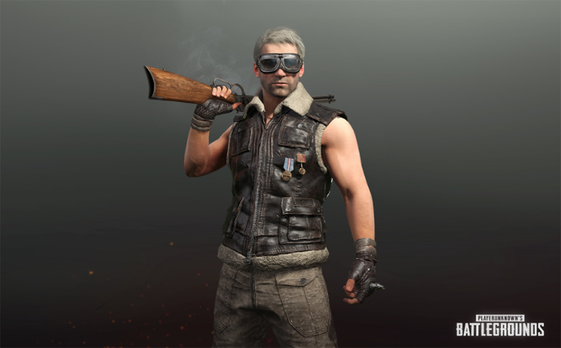
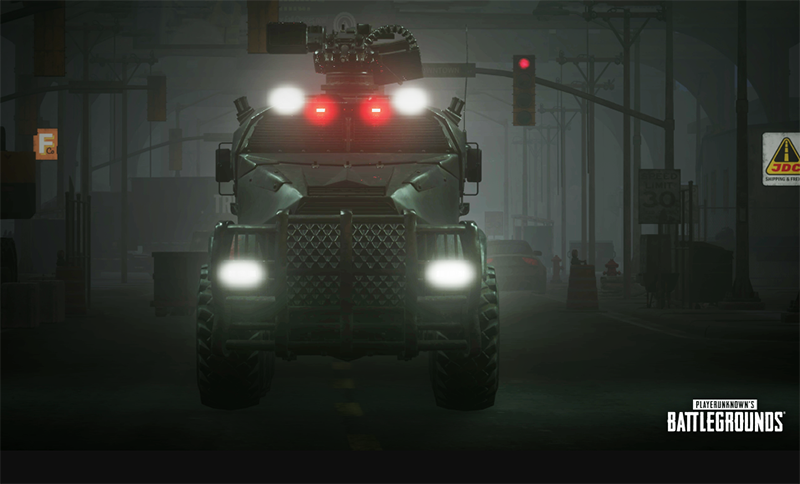

Người chơi có thể tự do lựa chọn chế độ chơi mà mình muốn, bao gồm chế độ cá nhân (solo) và chế độ tổ đội bao gồm tổ đội hai người (duo) hay bốn người (squad). Mỗi chế độ sẽ có những thử thách khác nhau, đòi hỏi sự linh động trong kỹ năng và chiến thuật. Khi chơi ở chế độ cá nhân, người chơi sẽ phải chịu loại trực tiếp nếu bị hạ gục. Tuy nhiên trong chế độ tổ đội, đồng đội sẽ có thể hồi sức cho bạn để bạn có thể tiếp tục chiến đấu.
Bắt đầu trò chơi, tất cả người chơi sẽ nhảy dù từ máy bay đến những khu vực khác nhau trên bản đồ, tùy theo bản đồ sẽ có diện tích 4x4, 6x6, 8x8(km) cũng như có những vị trí lý tưởng khác nhau cho việc tìm kiếm vật dụng.
Khi đã tiếp đất, mọi người đều có xuất phát điểm là con số 0 và việc người chơi cần làm là tìm kiếm vũ khí, trang bị như nón, áo giáp, balo cùng các vật phẩm đi kèm như máu và lựu đạn,... Chất lượng của những món đồ sẽ tùy thuộc vào độ khó - dễ của từng khu vực tìm kiếm, tương ứng với các cấp độ 1/2/3. Game được phát triển với hệ thống vũ khí vô cùng đa dạng, phù hợp cho việc áp dụng các lối chơi một cách linh hoạt, sáng tạo của người chơi.
Qua một khoảng thời gian nhất định, trên bản đồ sẽ xuất hiện khu vực giới hạn (Restricted Area), hay còn được gọi là “Vòng bo”.. Khu vực này sẽ thu hẹp dần và xuyên suốt trò chơi và khoảng thời gian giữa các mức là tương đối ngắn, đòi hỏi người chơi phải liên tục di chuyển trong quá trình trận đấu đang diễn ra. Nếu không chạy kịp vào vùng an toàn, người chơi sẽ phải chịu hiệu ứng đốt máu, tức thanh máu sẽ giảm từ từ cho đến khi người chơi bị hạ gục . Càng về cuối trận, sát thương tương ứng cho mỗi lần rút máu sẽ càng tăng lên.
Một trong những điểm khiến tựa game trở nên đặc biệt chính là Airdrop, các game thủ Việt Nam thường gọi Airdrop với cái tên thân mật là “thính”.. Đây là những thùng đồ được máy bay thả xuống bản đồ nơi đang diễn ra trận đấu. Đặc biệt, những vật phẩm nhận được trong Airdrop là những trang bị với độ hiếm cao nhất cùng với các loại vũ khí “chỉ có trong Airdrop” như AWM, Groza, Scope 15x,...
Trận đấu chỉ kết thúc khi tìm ra được người sống sót cuối cùng. Từng trận đấu sẽ quyết định thứ hạng của bạn trên bảng xếp hạng. Thời gian trung bình cho mỗi trận đấu vào khoảng 30 phút. Kết thúc trận đấu, số tiền bạn nhận được sẽ tương ứng với thời gian bạn sống sót, số lượng hạ gục và số sát thương gây ra. Số tiền này có thể được sử dụng để mua các hòm đồ, chứa các phụ kiện như quần áo hay trang phục súng,...
Điểm cộng lớn nhất của PlayerUnknown’s Battlegrounds có lẽ nằm ở mảng thiết kế hình ảnh của game. Đồ họa 3D được tối ưu vô cùng hiệu quả, thể hiện sắc sảo từ những cử chỉ, hành động nhỏ nhất của nhân vật cho đến những chi tiết nhỏ nhất như vết xước của xe, vệt bánh xe hay dấu chân của nhân vật.
Tạo hình nhân vật hết sức độc đáo, được tích hợp với những cử chỉ, giọng nói, cảm xúc cùng với hoạt ảnh di chuyển hành động cực kỳ chân thực đem lại cho người chơi một trải nghiệm nhập vai như ngoài đời thực. Trong trận đấu, không có bất kỳ thông tin nào của người chơi được hiển thị, giúp tăng tính công bằng cho trò chơi.
>Một điểm độc đáo làm nên thương hiệu của tựa game bắn súng nhập vai chính là âm thanh sống động của trò chơi. Bước vào trận đấu, người chơi sẽ được đưa vào một hệ thống âm thanh đa chiều, điều này giúp người chơi có thể dễ dàng xác định được vị trí của các máy bay, súng thính, hướng xe chạy hay vị trí của đối thủ khác.
Từng loại vũ khí khác nhau sẽ sở hữu những âm thanh khác nhau qua đó giúp người chơi có thể xác định được vũ khí mà đối phương đang sử dụng, từ đó đưa ra phương án tối ưu nhất cho chiến thuật được sử dụng. Từng tiếng đạn, tiếng nổ, độ rơi của đạn cho tới độ trễ của âm thanh tương ứng khoảng cách đã thể hiện một sự đầu tư công sức và chất xám vô cùng lớn của nhà sản xuất đối với “con gà đẻ trứng vàng” PUBG.

{kind=link}